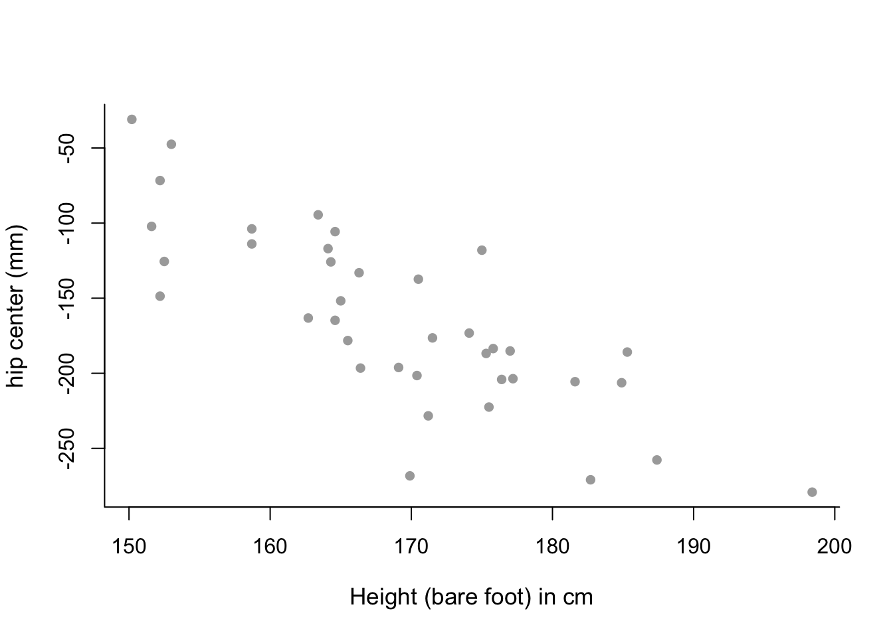

Chapter 3 Linear Regression Models
3.1 Building a Simple Linear Regression Model
lm stands for Linear Model and is the function used for Linear Regression
model <- lm(Y ~ X, data)Practical 1 Example
data(faithful)
model <- lm(waiting ~ eruptions, faithful)
summary(model)##
## Call:
## lm(formula = waiting ~ eruptions, data = faithful)
##
## Residuals:
## Min 1Q Median 3Q Max
## -12.0796 -4.4831 0.2122 3.9246 15.9719
##
## Coefficients:
## Estimate Std. Error t value Pr(>|t|)
## (Intercept) 33.4744 1.1549 28.98 <2e-16 ***
## eruptions 10.7296 0.3148 34.09 <2e-16 ***
## ---
## Signif. codes: 0 '***' 0.001 '**' 0.01 '*' 0.05 '.' 0.1 ' ' 1
##
## Residual standard error: 5.914 on 270 degrees of freedom
## Multiple R-squared: 0.8115, Adjusted R-squared: 0.8108
## F-statistic: 1162 on 1 and 270 DF, p-value: < 2.2e-16Useful functions to extract data from model:
summ <- summary(model)
coef(model)gives coefficientsfitted(model)returns the vector of the fitted values, \(\hat{y}_i = b_0 + b_1 x_i\)resid(model)(orsumm$residuals) returns vector of residuals, \(e_i = y_i - \hat{y}_i\)summ$coefficientsgives more information on coefficient estimates (standard error, t-statistic, corresponding two-sided p-value)summ$sigmaextracts regression standard errorsumm$r.squaredreturns value of \(R^2\)
3.2 Plotting a Simple Linear Regression Model
Using Base R
plot(faithful$waiting ~ faithful$eruptions, xlab="Eruption Time (m)",
ylab="Waiting Time Between Eruptions (m)", pch=16, col="cornflowerblue")
abline(model, col="red")